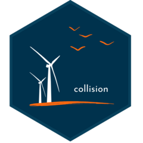

Collision of what?
This is an R package that uses ecological data from field surveys and literature to predict the long term average collision rate between a species of bird and wind turbines. It is a specific type of model called an (Avian) Collision Risk Model (CRM).
Who’s it for?
collision is designed for use as part of the environmental impact assessment process that wind developers undertake when planning for a new wind farm. It can also be used to compare and combine estimates across multiple sites for cumulative impact assessment; an important process for industry and regulators to manage the level of wind development that’s sustainable without having unintended consequences for vulnerable species.
It’s designed in such a way that it is applicable to onshore and offshore wind and for resident and migrating species.
Is it peer reviewed?
We are finalising independent peer review of this package and the underlying methodology currently as part of a package of work under the Australian Government’s Renewables Environmental Research Initiative. More details will be available in mid 2026.
We are also preparing a journal paper to document the maths and validation tests publicly.
This package was developed by contribution of code and maths from Symbolix and Biosis. The turbine model geometry and calculation of collision given turbine interaction is drawn from Smales et. al (2013)1
What are the terms of use?
{collision} is made available under a GPL-3 licence.
The citation for the package is:
citation("collision")
#> To cite package 'collision' in publications use:
#>
#> Stark E, Stuart M, Peggy Y (2026). _collision: Collision Risk Model
#> for Wind and Wildlife_. R package version 1.0.4, commit
#> 850d6064a1f78e8726adcb53dc0b6b900daaf501,
#> <https://github.com/SymbolixAU/collision>.
#>
#> A BibTeX entry for LaTeX users is
#>
#> @Manual{,
#> title = {collision: Collision Risk Model for Wind and Wildlife},
#> author = {Elizabeth Stark and Muir Stuart and Yandell Peggy},
#> year = {2026},
#> note = {R package version 1.0.4, commit 850d6064a1f78e8726adcb53dc0b6b900daaf501},
#> url = {https://github.com/SymbolixAU/collision},
#> }Quick start
You can install the development version of collision from GitHub with:
# install.packages("remotes")
remotes::install_github("SymbolixAU/collision", build_vignettes = TRUE)Is it finished and ready for use?
Ha! Is an open source project ever finished?
But seriously, the methodology and the mathematics of this package are stable. The package itself is being finalised based on recent peer reviews and upcoming consultations. New and updated vignettes are being added as we think of them. To see what we are currently working on go to the issues log.
Can I help?
The best way to log a suggestion, feature, issue or bug is via the issues log as a starting point. We will accept pull requests but only if discussed and agreed via a logged issue first.
Aren’t there already CRMs?
Yes - this has been an active area of development and research for 40 years2
The main deviation of this package from other examples is the flexibility it affords the analyst. In Australia, CRM is required for diverse species under varied conditions both on and offshore. This package provides a structured workflow but aims to be flexible enough to support different time-scales of survey (e.g. to enable modelling of short term migrants) or spatial modelling (e.g. different relative risk per turbine). Basic usage is below but the vignettes will work through specific examples.
The maths in a nutshell
The number of collisions per year can be conceptualised as
, where
is the number of interactions with a given turbine, is the probability of collision given interaction, and is the probability of turbine (meso + macro) avoidance, i.e. birds modifying their flight patterns in the presence of turbines, to go around, above, below or to dynamically avoid the sweeping blade.
is calculated based on a flight flux rate - the number of flights through a given vertical area in a given time period. This number requires field survey observations and survey metadata of the duration and effective radius/width surveyed.
is calculated from of the turbine and the archetype bird species and is generated from literature review. In this package accounts for flights from any direction and the probability of collision with the static turbine as a whole, and with the dynamic component (moving blade).
This package offers an R package for using and comparing different approaches to stochastic modelling of collision rates between birds and turbines.
It estimates:
- Site activity rate from distance corrected data
- Number of interactions per year per turbine (this can be extended to include spatial probability).
- Probability of collision with turbine blades for interacting flights based on Smales et al (2013)^{1}.